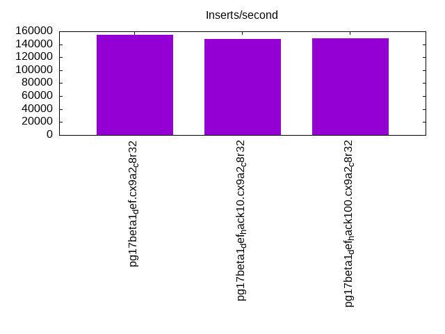
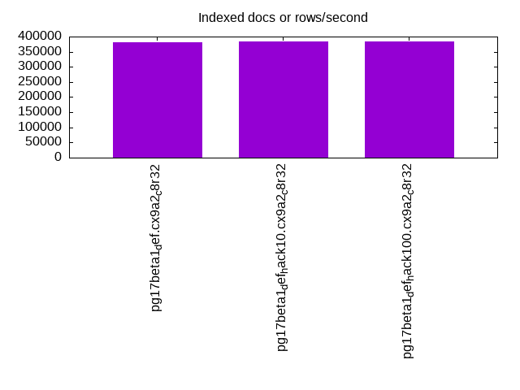
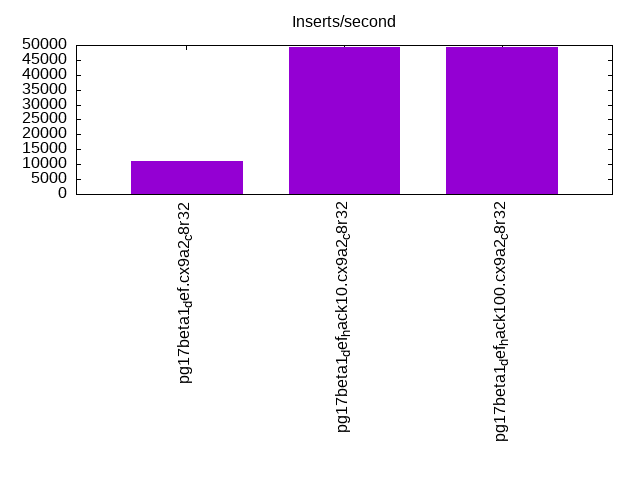
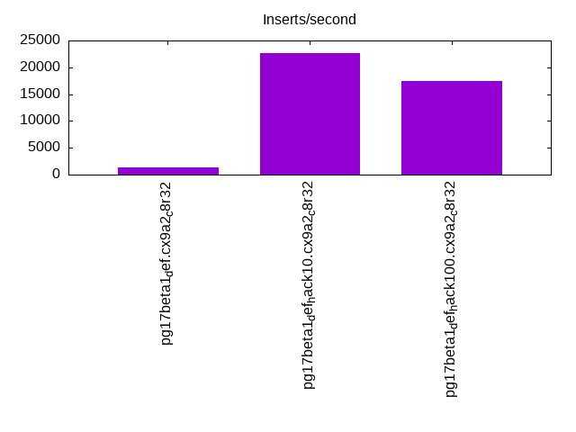
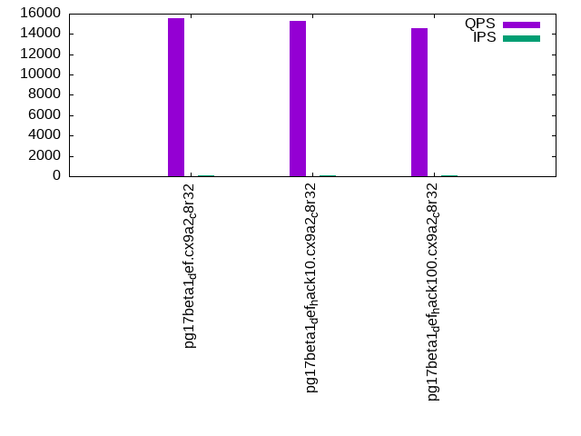
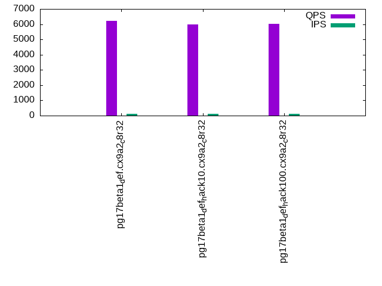
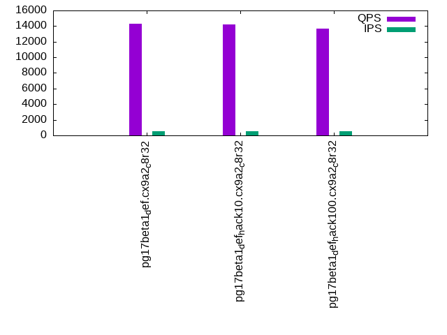
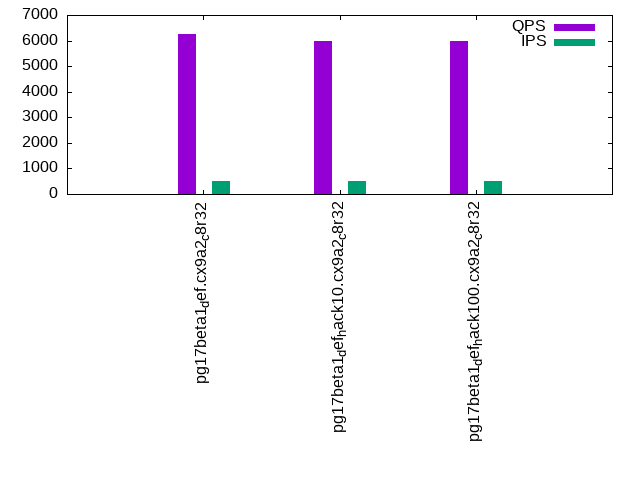
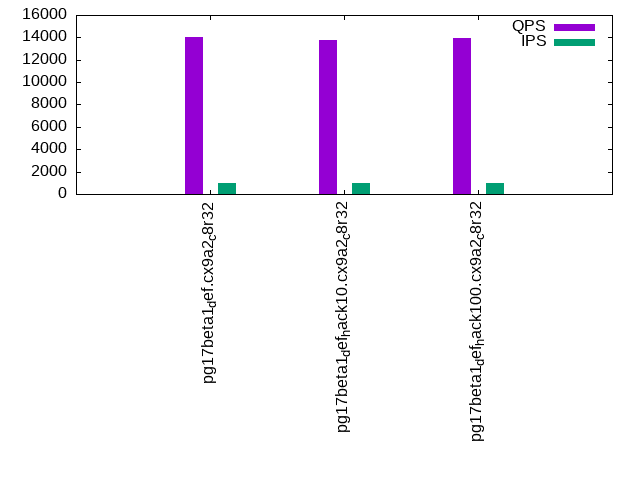
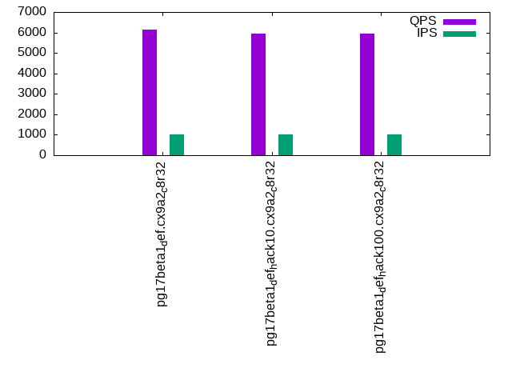

This is a report for the insert benchmark with 50M docs and 1 client(s). It is generated by scripts (bash, awk, sed) and Tufte might not be impressed. An overview of the insert benchmark is here and a short update is here. Below, by DBMS, I mean DBMS+version.config. An example is my8020.c10b40 where my means MySQL, 8020 is version 8.0.20 and c10b40 is the name for the configuration file.
The test server has 8 AMD cores, 32G RAM and an NVMe SSD. It is described here as the ASUS PN53. The benchmark was run with 1 client and there were 1 or 3 connections per client (1 for queries or inserts without rate limits, 1+1 for rate limited inserts+deletes). It uses 1 table. It loads 50M rows per table without secondary indexes, creates 3 secondary indexes per table, then inserts 40m+10m rows per table with a delete per insert to avoid growing the table. It then does 6 read+write tests for 1800s each that do queries as fast as possible with 100,100,500,500,1000,1000 inserts/s and the same for deletes/s per client concurrent with the queries. The database is cached in memory. Clients and the DBMS share one server. The per-database configs are in the per-database subdirectories here.
The tested DBMS are:
The numbers are inserts/s for l.i0, l.i1 and l.i2, indexed docs (or rows) /s for l.x and queries/s for qr100, qp100 thru qr1000, qp1000" The values are the average rate over the entire test for inserts (IPS) and queries (QPS). The range of values for IPS and QPS is split into 3 parts: bottom 25%, middle 50%, top 25%. Values in the bottom 25% have a red background, values in the top 25% have a green background and values in the middle have no color. A gray background is used for values that can be ignored because the DBMS did not sustain the target insert rate. Red backgrounds are not used when the minimum value is within 80% of the max value.
| dbms | l.i0 | l.x | l.i1 | l.i2 | qr100 | qp100 | qr500 | qp500 | qr1000 | qp1000 |
|---|---|---|---|---|---|---|---|---|---|---|
| pg17beta1_def.cx9a2_c8r32 | 154799 | 381680 | 11182 | 1286 | 15516 | 6220 | 14272 | 6258 | 14016 | 6149 |
| pg17beta1_def_hack10.cx9a2_c8r32 | 148368 | 384616 | 49322 | 22573 | 15250 | 5996 | 14191 | 5968 | 13737 | 5934 |
| pg17beta1_def_hack100.cx9a2_c8r32 | 148810 | 384616 | 49383 | 17513 | 14552 | 6013 | 13679 | 5966 | 13932 | 5939 |
This table has relative throughput, throughput for the DBMS relative to the DBMS in the first line, using the absolute throughput from the previous table. Values less than 0.95 have a yellow background. Values greater than 1.05 have a blue background.
| dbms | l.i0 | l.x | l.i1 | l.i2 | qr100 | qp100 | qr500 | qp500 | qr1000 | qp1000 |
|---|---|---|---|---|---|---|---|---|---|---|
| pg17beta1_def.cx9a2_c8r32 | 1.00 | 1.00 | 1.00 | 1.00 | 1.00 | 1.00 | 1.00 | 1.00 | 1.00 | 1.00 |
| pg17beta1_def_hack10.cx9a2_c8r32 | 0.96 | 1.01 | 4.41 | 17.55 | 0.98 | 0.96 | 0.99 | 0.95 | 0.98 | 0.97 |
| pg17beta1_def_hack100.cx9a2_c8r32 | 0.96 | 1.01 | 4.42 | 13.62 | 0.94 | 0.97 | 0.96 | 0.95 | 0.99 | 0.97 |
This lists the average rate of inserts/s for the tests that do inserts concurrent with queries. For such tests the query rate is listed in the table above. The read+write tests are setup so that the insert rate should match the target rate every second. Cells that are not at least 95% of the target have a red background to indicate a failure to satisfy the target.
| dbms | qr100.L1 | qp100.L2 | qr500.L3 | qp500.L4 | qr1000.L5 | qp1000.L6 |
|---|---|---|---|---|---|---|
| pg17beta1_def.cx9a2_c8r32 | 100 | 100 | 499 | 499 | 999 | 999 |
| pg17beta1_def_hack10.cx9a2_c8r32 | 100 | 100 | 499 | 499 | 999 | 999 |
| pg17beta1_def_hack100.cx9a2_c8r32 | 100 | 100 | 499 | 499 | 999 | 999 |
| target | 100 | 100 | 500 | 500 | 1000 | 1000 |
l.i0: load without secondary indexes. Graphs for performance per 1-second interval are here.
Average throughput:
Insert response time histogram: each cell has the percentage of responses that take <= the time in the header and max is the max response time in seconds. For the max column values in the top 25% of the range have a red background and in the bottom 25% of the range have a green background. The red background is not used when the min value is within 80% of the max value.
| dbms | 256us | 1ms | 4ms | 16ms | 64ms | 256ms | 1s | 4s | 16s | gt | max |
|---|---|---|---|---|---|---|---|---|---|---|---|
| pg17beta1_def.cx9a2_c8r32 | 99.924 | 0.076 | 0.002 | ||||||||
| pg17beta1_def_hack10.cx9a2_c8r32 | 99.920 | 0.080 | nonzero | 0.005 | |||||||
| pg17beta1_def_hack100.cx9a2_c8r32 | 99.919 | 0.081 | 0.002 |
Performance metrics for the DBMS listed above. Some are normalized by throughput, others are not. Legend for results is here.
ips qps rps rmbps wps wmbps rpq rkbpq wpi wkbpi csps cpups cspq cpupq dbgb1 dbgb2 rss maxop p50 p99 tag 154799 0 0 0.0 571.0 65.5 0.000 0.000 0.004 0.433 16548 21.4 0.107 11 4.8 13.0 0.4 0.002 154733 153534 pg17beta1_def.cx9a2_c8r32 148368 0 0 0.0 556.5 63.9 0.000 0.000 0.004 0.441 16024 21.3 0.108 11 4.8 13.0 0.4 0.005 148537 142456 pg17beta1_def_hack10.cx9a2_c8r32 148810 0 0 0.0 557.6 64.0 0.000 0.000 0.004 0.441 16036 21.5 0.108 12 4.8 13.0 0.4 0.002 149787 142742 pg17beta1_def_hack100.cx9a2_c8r32
l.x: create secondary indexes.
Average throughput:
Performance metrics for the DBMS listed above. Some are normalized by throughput, others are not. Legend for results is here.
ips qps rps rmbps wps wmbps rpq rkbpq wpi wkbpi csps cpups cspq cpupq dbgb1 dbgb2 rss maxop p50 p99 tag 381680 0 0 0.0 936.5 115.8 0.000 0.000 0.002 0.311 680 11.7 0.002 2 9.6 22.1 5.0 0.002 NA NA pg17beta1_def.cx9a2_c8r32 384616 0 0 0.0 956.3 117.9 0.000 0.000 0.002 0.314 600 11.4 0.002 2 9.6 22.1 5.0 0.002 NA NA pg17beta1_def_hack10.cx9a2_c8r32 384616 0 0 0.0 950.6 117.5 0.000 0.000 0.002 0.313 681 11.5 0.002 2 9.6 22.1 5.0 0.002 NA NA pg17beta1_def_hack100.cx9a2_c8r32
l.i1: continue load after secondary indexes created with 50 inserts per transaction. Graphs for performance per 1-second interval are here.
Average throughput:
Insert response time histogram: each cell has the percentage of responses that take <= the time in the header and max is the max response time in seconds. For the max column values in the top 25% of the range have a red background and in the bottom 25% of the range have a green background. The red background is not used when the min value is within 80% of the max value.
| dbms | 256us | 1ms | 4ms | 16ms | 64ms | 256ms | 1s | 4s | 16s | gt | max |
|---|---|---|---|---|---|---|---|---|---|---|---|
| pg17beta1_def.cx9a2_c8r32 | 28.062 | 71.936 | 0.001 | 0.001 | 0.029 | ||||||
| pg17beta1_def_hack10.cx9a2_c8r32 | 70.828 | 29.156 | 0.009 | 0.007 | 0.036 | ||||||
| pg17beta1_def_hack100.cx9a2_c8r32 | 70.801 | 29.185 | 0.008 | 0.006 | 0.032 |
Delete response time histogram: each cell has the percentage of responses that take <= the time in the header and max is the max response time in seconds. For the max column values in the top 25% of the range have a red background and in the bottom 25% of the range have a green background. The red background is not used when the min value is within 80% of the max value.
| dbms | 256us | 1ms | 4ms | 16ms | 64ms | 256ms | 1s | 4s | 16s | gt | max |
|---|---|---|---|---|---|---|---|---|---|---|---|
| pg17beta1_def.cx9a2_c8r32 | 11.229 | 45.669 | 43.100 | 0.001 | 0.031 | ||||||
| pg17beta1_def_hack10.cx9a2_c8r32 | 99.974 | 0.017 | 0.005 | 0.003 | 0.062 | ||||||
| pg17beta1_def_hack100.cx9a2_c8r32 | 99.932 | 0.061 | 0.005 | 0.003 | 0.024 |
Performance metrics for the DBMS listed above. Some are normalized by throughput, others are not. Legend for results is here.
ips qps rps rmbps wps wmbps rpq rkbpq wpi wkbpi csps cpups cspq cpupq dbgb1 dbgb2 rss maxop p50 p99 tag 11182 0 0 0.0 171.0 18.8 0.000 0.000 0.015 1.724 5203 17.7 0.465 127 12.2 45.8 8.5 0.029 7742 3496 pg17beta1_def.cx9a2_c8r32 49322 0 0 0.0 724.1 81.6 0.000 0.000 0.015 1.695 22259 22.7 0.451 37 12.4 50.5 11.0 0.036 49896 32813 pg17beta1_def_hack10.cx9a2_c8r32 49383 0 0 0.0 719.0 81.1 0.000 0.000 0.015 1.682 22269 23.4 0.451 38 12.4 50.3 1.2 0.032 49796 35562 pg17beta1_def_hack100.cx9a2_c8r32
l.i2: continue load after secondary indexes created with 5 inserts per transaction. Graphs for performance per 1-second interval are here.
Average throughput:
Insert response time histogram: each cell has the percentage of responses that take <= the time in the header and max is the max response time in seconds. For the max column values in the top 25% of the range have a red background and in the bottom 25% of the range have a green background. The red background is not used when the min value is within 80% of the max value.
| dbms | 256us | 1ms | 4ms | 16ms | 64ms | 256ms | 1s | 4s | 16s | gt | max |
|---|---|---|---|---|---|---|---|---|---|---|---|
| pg17beta1_def.cx9a2_c8r32 | 29.143 | 70.857 | nonzero | 0.002 | |||||||
| pg17beta1_def_hack10.cx9a2_c8r32 | 98.941 | 1.059 | nonzero | nonzero | 0.007 | ||||||
| pg17beta1_def_hack100.cx9a2_c8r32 | 98.975 | 1.022 | 0.003 | nonzero | 0.007 |
Delete response time histogram: each cell has the percentage of responses that take <= the time in the header and max is the max response time in seconds. For the max column values in the top 25% of the range have a red background and in the bottom 25% of the range have a green background. The red background is not used when the min value is within 80% of the max value.
| dbms | 256us | 1ms | 4ms | 16ms | 64ms | 256ms | 1s | 4s | 16s | gt | max |
|---|---|---|---|---|---|---|---|---|---|---|---|
| pg17beta1_def.cx9a2_c8r32 | 0.983 | 16.375 | 25.948 | 56.694 | nonzero | 0.020 | |||||
| pg17beta1_def_hack10.cx9a2_c8r32 | 99.035 | 0.962 | 0.004 | nonzero | 0.006 | ||||||
| pg17beta1_def_hack100.cx9a2_c8r32 | 77.174 | 22.819 | 0.006 | nonzero | 0.007 |
Performance metrics for the DBMS listed above. Some are normalized by throughput, others are not. Legend for results is here.
ips qps rps rmbps wps wmbps rpq rkbpq wpi wkbpi csps cpups cspq cpupq dbgb1 dbgb2 rss maxop p50 p99 tag 1286 0 0 0.0 56.3 5.3 0.000 0.000 0.044 4.235 5338 14.0 4.151 871 12.6 45.9 0.4 0.002 884 579 pg17beta1_def.cx9a2_c8r32 22573 0 0 0.0 319.5 34.9 0.000 0.000 0.014 1.582 87526 27.1 3.877 96 12.8 52.9 11.5 0.007 22576 21107 pg17beta1_def_hack10.cx9a2_c8r32 17513 0 0 0.0 242.2 27.0 0.000 0.000 0.014 1.580 69146 24.5 3.948 112 12.8 52.8 8.3 0.007 18025 14984 pg17beta1_def_hack100.cx9a2_c8r32
qr100.L1: range queries with 100 insert/s per client. Graphs for performance per 1-second interval are here.
Average throughput:
Query response time histogram: each cell has the percentage of responses that take <= the time in the header and max is the max response time in seconds. For max values in the top 25% of the range have a red background and in the bottom 25% of the range have a green background. The red background is not used when the min value is within 80% of the max value.
| dbms | 256us | 1ms | 4ms | 16ms | 64ms | 256ms | 1s | 4s | 16s | gt | max |
|---|---|---|---|---|---|---|---|---|---|---|---|
| pg17beta1_def.cx9a2_c8r32 | 100.000 | nonzero | nonzero | 0.004 | |||||||
| pg17beta1_def_hack10.cx9a2_c8r32 | 99.999 | 0.001 | nonzero | 0.001 | |||||||
| pg17beta1_def_hack100.cx9a2_c8r32 | 99.997 | 0.003 | nonzero | nonzero | 0.004 |
Insert response time histogram: each cell has the percentage of responses that take <= the time in the header and max is the max response time in seconds. For max values in the top 25% of the range have a red background and in the bottom 25% of the range have a green background. The red background is not used when the min value is within 80% of the max value.
| dbms | 256us | 1ms | 4ms | 16ms | 64ms | 256ms | 1s | 4s | 16s | gt | max |
|---|---|---|---|---|---|---|---|---|---|---|---|
| pg17beta1_def.cx9a2_c8r32 | 99.944 | 0.056 | 0.006 | ||||||||
| pg17beta1_def_hack10.cx9a2_c8r32 | 99.944 | 0.056 | 0.006 | ||||||||
| pg17beta1_def_hack100.cx9a2_c8r32 | 99.944 | 0.056 | 0.006 |
Delete response time histogram: each cell has the percentage of responses that take <= the time in the header and max is the max response time in seconds. For max values in the top 25% of the range have a red background and in the bottom 25% of the range have a green background. The red background is not used when the min value is within 80% of the max value.
| dbms | 256us | 1ms | 4ms | 16ms | 64ms | 256ms | 1s | 4s | 16s | gt | max |
|---|---|---|---|---|---|---|---|---|---|---|---|
| pg17beta1_def.cx9a2_c8r32 | 51.250 | 48.750 | 0.002 | ||||||||
| pg17beta1_def_hack10.cx9a2_c8r32 | 97.167 | 2.833 | 0.002 | ||||||||
| pg17beta1_def_hack100.cx9a2_c8r32 | 71.306 | 28.694 | 0.003 |
Performance metrics for the DBMS listed above. Some are normalized by throughput, others are not. Legend for results is here.
ips qps rps rmbps wps wmbps rpq rkbpq wpi wkbpi csps cpups cspq cpupq dbgb1 dbgb2 rss maxop p50 p99 tag 100 15516 0 0.0 15.2 1.0 0.000 0.000 0.152 9.748 59337 12.7 3.824 65 12.7 41.2 0.3 0.004 15519 15311 pg17beta1_def.cx9a2_c8r32 100 15250 0 0.0 14.5 0.9 0.000 0.000 0.146 9.517 58298 10.8 3.823 57 12.8 52.9 0.3 0.001 15326 14368 pg17beta1_def_hack10.cx9a2_c8r32 100 14552 0 0.0 14.9 0.9 0.000 0.000 0.150 9.726 55632 10.7 3.823 59 12.8 52.8 0.3 0.004 14544 14192 pg17beta1_def_hack100.cx9a2_c8r32
qp100.L2: point queries with 100 insert/s per client. Graphs for performance per 1-second interval are here.
Average throughput:
Query response time histogram: each cell has the percentage of responses that take <= the time in the header and max is the max response time in seconds. For max values in the top 25% of the range have a red background and in the bottom 25% of the range have a green background. The red background is not used when the min value is within 80% of the max value.
| dbms | 256us | 1ms | 4ms | 16ms | 64ms | 256ms | 1s | 4s | 16s | gt | max |
|---|---|---|---|---|---|---|---|---|---|---|---|
| pg17beta1_def.cx9a2_c8r32 | 99.984 | 0.016 | nonzero | 0.002 | |||||||
| pg17beta1_def_hack10.cx9a2_c8r32 | 97.448 | 2.552 | nonzero | 0.002 | |||||||
| pg17beta1_def_hack100.cx9a2_c8r32 | 98.019 | 1.981 | nonzero | 0.001 |
Insert response time histogram: each cell has the percentage of responses that take <= the time in the header and max is the max response time in seconds. For max values in the top 25% of the range have a red background and in the bottom 25% of the range have a green background. The red background is not used when the min value is within 80% of the max value.
| dbms | 256us | 1ms | 4ms | 16ms | 64ms | 256ms | 1s | 4s | 16s | gt | max |
|---|---|---|---|---|---|---|---|---|---|---|---|
| pg17beta1_def.cx9a2_c8r32 | 99.944 | 0.056 | 0.006 | ||||||||
| pg17beta1_def_hack10.cx9a2_c8r32 | 99.972 | 0.028 | 0.006 | ||||||||
| pg17beta1_def_hack100.cx9a2_c8r32 | 99.944 | 0.056 | 0.006 |
Delete response time histogram: each cell has the percentage of responses that take <= the time in the header and max is the max response time in seconds. For max values in the top 25% of the range have a red background and in the bottom 25% of the range have a green background. The red background is not used when the min value is within 80% of the max value.
| dbms | 256us | 1ms | 4ms | 16ms | 64ms | 256ms | 1s | 4s | 16s | gt | max |
|---|---|---|---|---|---|---|---|---|---|---|---|
| pg17beta1_def.cx9a2_c8r32 | 99.972 | 0.028 | 0.007 | ||||||||
| pg17beta1_def_hack10.cx9a2_c8r32 | 98.694 | 1.306 | 0.002 | ||||||||
| pg17beta1_def_hack100.cx9a2_c8r32 | 66.833 | 33.167 | 0.003 |
Performance metrics for the DBMS listed above. Some are normalized by throughput, others are not. Legend for results is here.
ips qps rps rmbps wps wmbps rpq rkbpq wpi wkbpi csps cpups cspq cpupq dbgb1 dbgb2 rss maxop p50 p99 tag 100 6220 0 0.0 85.8 2.0 0.000 0.000 0.859 20.115 25227 13.5 4.056 174 12.7 39.8 0.3 0.002 6217 6153 pg17beta1_def.cx9a2_c8r32 100 5996 0 0.0 87.6 2.0 0.000 0.000 0.878 20.142 24323 12.8 4.057 171 12.9 51.5 0.3 0.002 5961 5882 pg17beta1_def_hack10.cx9a2_c8r32 100 6013 0 0.0 87.7 2.0 0.000 0.000 0.879 20.308 24387 12.9 4.056 172 12.8 51.4 0.3 0.001 5993 5881 pg17beta1_def_hack100.cx9a2_c8r32
qr500.L3: range queries with 500 insert/s per client. Graphs for performance per 1-second interval are here.
Average throughput:
Query response time histogram: each cell has the percentage of responses that take <= the time in the header and max is the max response time in seconds. For max values in the top 25% of the range have a red background and in the bottom 25% of the range have a green background. The red background is not used when the min value is within 80% of the max value.
| dbms | 256us | 1ms | 4ms | 16ms | 64ms | 256ms | 1s | 4s | 16s | gt | max |
|---|---|---|---|---|---|---|---|---|---|---|---|
| pg17beta1_def.cx9a2_c8r32 | 99.998 | 0.002 | nonzero | 0.004 | |||||||
| pg17beta1_def_hack10.cx9a2_c8r32 | 99.997 | 0.003 | nonzero | 0.004 | |||||||
| pg17beta1_def_hack100.cx9a2_c8r32 | 99.996 | 0.004 | nonzero | 0.003 |
Insert response time histogram: each cell has the percentage of responses that take <= the time in the header and max is the max response time in seconds. For max values in the top 25% of the range have a red background and in the bottom 25% of the range have a green background. The red background is not used when the min value is within 80% of the max value.
| dbms | 256us | 1ms | 4ms | 16ms | 64ms | 256ms | 1s | 4s | 16s | gt | max |
|---|---|---|---|---|---|---|---|---|---|---|---|
| pg17beta1_def.cx9a2_c8r32 | 26.722 | 73.267 | 0.011 | 0.006 | |||||||
| pg17beta1_def_hack10.cx9a2_c8r32 | 18.439 | 81.550 | 0.011 | 0.006 | |||||||
| pg17beta1_def_hack100.cx9a2_c8r32 | 17.833 | 82.150 | 0.017 | 0.006 |
Delete response time histogram: each cell has the percentage of responses that take <= the time in the header and max is the max response time in seconds. For max values in the top 25% of the range have a red background and in the bottom 25% of the range have a green background. The red background is not used when the min value is within 80% of the max value.
| dbms | 256us | 1ms | 4ms | 16ms | 64ms | 256ms | 1s | 4s | 16s | gt | max |
|---|---|---|---|---|---|---|---|---|---|---|---|
| pg17beta1_def.cx9a2_c8r32 | 86.050 | 13.950 | 0.011 | ||||||||
| pg17beta1_def_hack10.cx9a2_c8r32 | 99.800 | 0.200 | 0.003 | ||||||||
| pg17beta1_def_hack100.cx9a2_c8r32 | 95.878 | 4.122 | 0.003 |
Performance metrics for the DBMS listed above. Some are normalized by throughput, others are not. Legend for results is here.
ips qps rps rmbps wps wmbps rpq rkbpq wpi wkbpi csps cpups cspq cpupq dbgb1 dbgb2 rss maxop p50 p99 tag 499 14272 0 0.0 93.7 3.1 0.000 0.000 0.188 6.287 54729 12.9 3.835 72 12.8 38.4 5.8 0.004 14270 13585 pg17beta1_def.cx9a2_c8r32 499 14191 0 0.0 94.7 3.0 0.000 0.000 0.190 6.233 54404 11.1 3.834 63 12.9 50.1 6.0 0.004 14192 13473 pg17beta1_def_hack10.cx9a2_c8r32 499 13679 0 0.0 94.8 3.0 0.000 0.000 0.190 6.243 52448 11.0 3.834 64 12.8 50.0 6.0 0.003 13665 13009 pg17beta1_def_hack100.cx9a2_c8r32
qp500.L4: point queries with 500 insert/s per client. Graphs for performance per 1-second interval are here.
Average throughput:
Query response time histogram: each cell has the percentage of responses that take <= the time in the header and max is the max response time in seconds. For max values in the top 25% of the range have a red background and in the bottom 25% of the range have a green background. The red background is not used when the min value is within 80% of the max value.
| dbms | 256us | 1ms | 4ms | 16ms | 64ms | 256ms | 1s | 4s | 16s | gt | max |
|---|---|---|---|---|---|---|---|---|---|---|---|
| pg17beta1_def.cx9a2_c8r32 | 99.974 | 0.026 | nonzero | 0.002 | |||||||
| pg17beta1_def_hack10.cx9a2_c8r32 | 97.934 | 2.066 | nonzero | 0.002 | |||||||
| pg17beta1_def_hack100.cx9a2_c8r32 | 97.955 | 2.045 | nonzero | 0.002 |
Insert response time histogram: each cell has the percentage of responses that take <= the time in the header and max is the max response time in seconds. For max values in the top 25% of the range have a red background and in the bottom 25% of the range have a green background. The red background is not used when the min value is within 80% of the max value.
| dbms | 256us | 1ms | 4ms | 16ms | 64ms | 256ms | 1s | 4s | 16s | gt | max |
|---|---|---|---|---|---|---|---|---|---|---|---|
| pg17beta1_def.cx9a2_c8r32 | 6.700 | 93.289 | 0.011 | 0.006 | |||||||
| pg17beta1_def_hack10.cx9a2_c8r32 | 5.644 | 94.344 | 0.011 | 0.006 | |||||||
| pg17beta1_def_hack100.cx9a2_c8r32 | 5.394 | 94.594 | 0.011 | 0.006 |
Delete response time histogram: each cell has the percentage of responses that take <= the time in the header and max is the max response time in seconds. For max values in the top 25% of the range have a red background and in the bottom 25% of the range have a green background. The red background is not used when the min value is within 80% of the max value.
| dbms | 256us | 1ms | 4ms | 16ms | 64ms | 256ms | 1s | 4s | 16s | gt | max |
|---|---|---|---|---|---|---|---|---|---|---|---|
| pg17beta1_def.cx9a2_c8r32 | 0.439 | 99.556 | 0.006 | 0.023 | |||||||
| pg17beta1_def_hack10.cx9a2_c8r32 | 99.928 | 0.072 | 0.002 | ||||||||
| pg17beta1_def_hack100.cx9a2_c8r32 | 95.522 | 4.478 | 0.003 |
Performance metrics for the DBMS listed above. Some are normalized by throughput, others are not. Legend for results is here.
ips qps rps rmbps wps wmbps rpq rkbpq wpi wkbpi csps cpups cspq cpupq dbgb1 dbgb2 rss maxop p50 p99 tag 499 6258 0 0.0 67.7 4.1 0.000 0.000 0.136 8.497 25491 14.1 4.073 180 12.9 35.4 5.7 0.002 6251 6169 pg17beta1_def.cx9a2_c8r32 499 5968 0 0.0 68.9 4.2 0.000 0.000 0.138 8.524 24334 13.1 4.077 176 13.0 47.1 5.2 0.002 5946 5855 pg17beta1_def_hack10.cx9a2_c8r32 499 5966 0 0.0 70.1 4.3 0.000 0.000 0.140 8.869 24321 13.3 4.077 178 12.9 46.9 10.7 0.002 5945 5850 pg17beta1_def_hack100.cx9a2_c8r32
qr1000.L5: range queries with 1000 insert/s per client. Graphs for performance per 1-second interval are here.
Average throughput:
Query response time histogram: each cell has the percentage of responses that take <= the time in the header and max is the max response time in seconds. For max values in the top 25% of the range have a red background and in the bottom 25% of the range have a green background. The red background is not used when the min value is within 80% of the max value.
| dbms | 256us | 1ms | 4ms | 16ms | 64ms | 256ms | 1s | 4s | 16s | gt | max |
|---|---|---|---|---|---|---|---|---|---|---|---|
| pg17beta1_def.cx9a2_c8r32 | 99.998 | 0.002 | nonzero | nonzero | 0.016 | ||||||
| pg17beta1_def_hack10.cx9a2_c8r32 | 99.994 | 0.006 | nonzero | nonzero | nonzero | 0.016 | |||||
| pg17beta1_def_hack100.cx9a2_c8r32 | 99.996 | 0.004 | nonzero | 0.002 |
Insert response time histogram: each cell has the percentage of responses that take <= the time in the header and max is the max response time in seconds. For max values in the top 25% of the range have a red background and in the bottom 25% of the range have a green background. The red background is not used when the min value is within 80% of the max value.
| dbms | 256us | 1ms | 4ms | 16ms | 64ms | 256ms | 1s | 4s | 16s | gt | max |
|---|---|---|---|---|---|---|---|---|---|---|---|
| pg17beta1_def.cx9a2_c8r32 | 51.817 | 48.161 | 0.019 | 0.003 | 0.021 | ||||||
| pg17beta1_def_hack10.cx9a2_c8r32 | 49.681 | 50.294 | 0.017 | 0.008 | 0.028 | ||||||
| pg17beta1_def_hack100.cx9a2_c8r32 | 40.328 | 59.667 | 0.006 | 0.006 |
Delete response time histogram: each cell has the percentage of responses that take <= the time in the header and max is the max response time in seconds. For max values in the top 25% of the range have a red background and in the bottom 25% of the range have a green background. The red background is not used when the min value is within 80% of the max value.
| dbms | 256us | 1ms | 4ms | 16ms | 64ms | 256ms | 1s | 4s | 16s | gt | max |
|---|---|---|---|---|---|---|---|---|---|---|---|
| pg17beta1_def.cx9a2_c8r32 | 8.678 | 64.936 | 26.378 | 0.008 | 0.033 | ||||||
| pg17beta1_def_hack10.cx9a2_c8r32 | 99.922 | 0.061 | 0.011 | 0.006 | 0.026 | ||||||
| pg17beta1_def_hack100.cx9a2_c8r32 | 97.833 | 2.167 | 0.003 |
Performance metrics for the DBMS listed above. Some are normalized by throughput, others are not. Legend for results is here.
ips qps rps rmbps wps wmbps rpq rkbpq wpi wkbpi csps cpups cspq cpupq dbgb1 dbgb2 rss maxop p50 p99 tag 999 14016 0 0.0 83.6 4.7 0.000 0.000 0.084 4.784 53950 13.9 3.849 79 12.9 33.4 3.9 0.016 14176 12056 pg17beta1_def.cx9a2_c8r32 999 13737 0 0.0 85.4 4.7 0.000 0.000 0.086 4.795 52886 11.3 3.850 66 13.1 44.0 5.0 0.016 13921 11971 pg17beta1_def_hack10.cx9a2_c8r32 999 13932 0 0.0 50.6 5.1 0.000 0.000 0.051 5.268 53639 11.5 3.850 66 12.9 43.4 6.2 0.002 13937 12850 pg17beta1_def_hack100.cx9a2_c8r32
qp1000.L6: point queries with 1000 insert/s per client. Graphs for performance per 1-second interval are here.
Average throughput:
Query response time histogram: each cell has the percentage of responses that take <= the time in the header and max is the max response time in seconds. For max values in the top 25% of the range have a red background and in the bottom 25% of the range have a green background. The red background is not used when the min value is within 80% of the max value.
| dbms | 256us | 1ms | 4ms | 16ms | 64ms | 256ms | 1s | 4s | 16s | gt | max |
|---|---|---|---|---|---|---|---|---|---|---|---|
| pg17beta1_def.cx9a2_c8r32 | 99.956 | 0.044 | nonzero | 0.002 | |||||||
| pg17beta1_def_hack10.cx9a2_c8r32 | 98.033 | 1.967 | nonzero | 0.002 | |||||||
| pg17beta1_def_hack100.cx9a2_c8r32 | 98.042 | 1.958 | nonzero | 0.002 |
Insert response time histogram: each cell has the percentage of responses that take <= the time in the header and max is the max response time in seconds. For max values in the top 25% of the range have a red background and in the bottom 25% of the range have a green background. The red background is not used when the min value is within 80% of the max value.
| dbms | 256us | 1ms | 4ms | 16ms | 64ms | 256ms | 1s | 4s | 16s | gt | max |
|---|---|---|---|---|---|---|---|---|---|---|---|
| pg17beta1_def.cx9a2_c8r32 | 20.978 | 79.017 | 0.003 | 0.003 | 0.016 | ||||||
| pg17beta1_def_hack10.cx9a2_c8r32 | 28.744 | 71.250 | 0.006 | 0.006 | |||||||
| pg17beta1_def_hack100.cx9a2_c8r32 | 28.311 | 71.681 | 0.006 | 0.003 | 0.017 |
Delete response time histogram: each cell has the percentage of responses that take <= the time in the header and max is the max response time in seconds. For max values in the top 25% of the range have a red background and in the bottom 25% of the range have a green background. The red background is not used when the min value is within 80% of the max value.
| dbms | 256us | 1ms | 4ms | 16ms | 64ms | 256ms | 1s | 4s | 16s | gt | max |
|---|---|---|---|---|---|---|---|---|---|---|---|
| pg17beta1_def.cx9a2_c8r32 | 8.936 | 32.417 | 58.647 | 0.016 | |||||||
| pg17beta1_def_hack10.cx9a2_c8r32 | 99.989 | 0.011 | 0.002 | ||||||||
| pg17beta1_def_hack100.cx9a2_c8r32 | 98.261 | 1.733 | 0.006 | 0.016 |
Performance metrics for the DBMS listed above. Some are normalized by throughput, others are not. Legend for results is here.
ips qps rps rmbps wps wmbps rpq rkbpq wpi wkbpi csps cpups cspq cpupq dbgb1 dbgb2 rss maxop p50 p99 tag 999 6149 0 0.0 65.2 5.1 0.000 0.000 0.065 5.241 25259 14.7 4.108 191 13.0 33.1 2.7 0.002 6153 6089 pg17beta1_def.cx9a2_c8r32 999 5934 0 0.0 65.5 5.1 0.000 0.000 0.066 5.202 24404 13.6 4.113 183 13.1 39.9 10.7 0.002 5929 5801 pg17beta1_def_hack10.cx9a2_c8r32 999 5939 0 0.0 65.6 4.8 0.000 0.000 0.066 4.959 24405 13.5 4.110 182 13.0 39.8 2.8 0.002 5930 5820 pg17beta1_def_hack100.cx9a2_c8r32
l.i0: load without secondary indexes
Performance metrics for all DBMS, not just the ones listed above. Some are normalized by throughput, others are not. Legend for results is here.
ips qps rps rmbps wps wmbps rpq rkbpq wpi wkbpi csps cpups cspq cpupq dbgb1 dbgb2 rss maxop p50 p99 tag 154799 0 0 0.0 571.0 65.5 0.000 0.000 0.004 0.433 16548 21.4 0.107 11 4.8 13.0 0.4 0.002 154733 153534 pg17beta1_def.cx9a2_c8r32 148368 0 0 0.0 556.5 63.9 0.000 0.000 0.004 0.441 16024 21.3 0.108 11 4.8 13.0 0.4 0.005 148537 142456 pg17beta1_def_hack10.cx9a2_c8r32 148810 0 0 0.0 557.6 64.0 0.000 0.000 0.004 0.441 16036 21.5 0.108 12 4.8 13.0 0.4 0.002 149787 142742 pg17beta1_def_hack100.cx9a2_c8r32
l.x: create secondary indexes
Performance metrics for all DBMS, not just the ones listed above. Some are normalized by throughput, others are not. Legend for results is here.
ips qps rps rmbps wps wmbps rpq rkbpq wpi wkbpi csps cpups cspq cpupq dbgb1 dbgb2 rss maxop p50 p99 tag 381680 0 0 0.0 936.5 115.8 0.000 0.000 0.002 0.311 680 11.7 0.002 2 9.6 22.1 5.0 0.002 NA NA pg17beta1_def.cx9a2_c8r32 384616 0 0 0.0 956.3 117.9 0.000 0.000 0.002 0.314 600 11.4 0.002 2 9.6 22.1 5.0 0.002 NA NA pg17beta1_def_hack10.cx9a2_c8r32 384616 0 0 0.0 950.6 117.5 0.000 0.000 0.002 0.313 681 11.5 0.002 2 9.6 22.1 5.0 0.002 NA NA pg17beta1_def_hack100.cx9a2_c8r32
l.i1: continue load after secondary indexes created with 50 inserts per transaction
Performance metrics for all DBMS, not just the ones listed above. Some are normalized by throughput, others are not. Legend for results is here.
ips qps rps rmbps wps wmbps rpq rkbpq wpi wkbpi csps cpups cspq cpupq dbgb1 dbgb2 rss maxop p50 p99 tag 11182 0 0 0.0 171.0 18.8 0.000 0.000 0.015 1.724 5203 17.7 0.465 127 12.2 45.8 8.5 0.029 7742 3496 pg17beta1_def.cx9a2_c8r32 49322 0 0 0.0 724.1 81.6 0.000 0.000 0.015 1.695 22259 22.7 0.451 37 12.4 50.5 11.0 0.036 49896 32813 pg17beta1_def_hack10.cx9a2_c8r32 49383 0 0 0.0 719.0 81.1 0.000 0.000 0.015 1.682 22269 23.4 0.451 38 12.4 50.3 1.2 0.032 49796 35562 pg17beta1_def_hack100.cx9a2_c8r32
l.i2: continue load after secondary indexes created with 5 inserts per transaction
Performance metrics for all DBMS, not just the ones listed above. Some are normalized by throughput, others are not. Legend for results is here.
ips qps rps rmbps wps wmbps rpq rkbpq wpi wkbpi csps cpups cspq cpupq dbgb1 dbgb2 rss maxop p50 p99 tag 1286 0 0 0.0 56.3 5.3 0.000 0.000 0.044 4.235 5338 14.0 4.151 871 12.6 45.9 0.4 0.002 884 579 pg17beta1_def.cx9a2_c8r32 22573 0 0 0.0 319.5 34.9 0.000 0.000 0.014 1.582 87526 27.1 3.877 96 12.8 52.9 11.5 0.007 22576 21107 pg17beta1_def_hack10.cx9a2_c8r32 17513 0 0 0.0 242.2 27.0 0.000 0.000 0.014 1.580 69146 24.5 3.948 112 12.8 52.8 8.3 0.007 18025 14984 pg17beta1_def_hack100.cx9a2_c8r32
qr100.L1: range queries with 100 insert/s per client
Performance metrics for all DBMS, not just the ones listed above. Some are normalized by throughput, others are not. Legend for results is here.
ips qps rps rmbps wps wmbps rpq rkbpq wpi wkbpi csps cpups cspq cpupq dbgb1 dbgb2 rss maxop p50 p99 tag 100 15516 0 0.0 15.2 1.0 0.000 0.000 0.152 9.748 59337 12.7 3.824 65 12.7 41.2 0.3 0.004 15519 15311 pg17beta1_def.cx9a2_c8r32 100 15250 0 0.0 14.5 0.9 0.000 0.000 0.146 9.517 58298 10.8 3.823 57 12.8 52.9 0.3 0.001 15326 14368 pg17beta1_def_hack10.cx9a2_c8r32 100 14552 0 0.0 14.9 0.9 0.000 0.000 0.150 9.726 55632 10.7 3.823 59 12.8 52.8 0.3 0.004 14544 14192 pg17beta1_def_hack100.cx9a2_c8r32
qp100.L2: point queries with 100 insert/s per client
Performance metrics for all DBMS, not just the ones listed above. Some are normalized by throughput, others are not. Legend for results is here.
ips qps rps rmbps wps wmbps rpq rkbpq wpi wkbpi csps cpups cspq cpupq dbgb1 dbgb2 rss maxop p50 p99 tag 100 6220 0 0.0 85.8 2.0 0.000 0.000 0.859 20.115 25227 13.5 4.056 174 12.7 39.8 0.3 0.002 6217 6153 pg17beta1_def.cx9a2_c8r32 100 5996 0 0.0 87.6 2.0 0.000 0.000 0.878 20.142 24323 12.8 4.057 171 12.9 51.5 0.3 0.002 5961 5882 pg17beta1_def_hack10.cx9a2_c8r32 100 6013 0 0.0 87.7 2.0 0.000 0.000 0.879 20.308 24387 12.9 4.056 172 12.8 51.4 0.3 0.001 5993 5881 pg17beta1_def_hack100.cx9a2_c8r32
qr500.L3: range queries with 500 insert/s per client
Performance metrics for all DBMS, not just the ones listed above. Some are normalized by throughput, others are not. Legend for results is here.
ips qps rps rmbps wps wmbps rpq rkbpq wpi wkbpi csps cpups cspq cpupq dbgb1 dbgb2 rss maxop p50 p99 tag 499 14272 0 0.0 93.7 3.1 0.000 0.000 0.188 6.287 54729 12.9 3.835 72 12.8 38.4 5.8 0.004 14270 13585 pg17beta1_def.cx9a2_c8r32 499 14191 0 0.0 94.7 3.0 0.000 0.000 0.190 6.233 54404 11.1 3.834 63 12.9 50.1 6.0 0.004 14192 13473 pg17beta1_def_hack10.cx9a2_c8r32 499 13679 0 0.0 94.8 3.0 0.000 0.000 0.190 6.243 52448 11.0 3.834 64 12.8 50.0 6.0 0.003 13665 13009 pg17beta1_def_hack100.cx9a2_c8r32
qp500.L4: point queries with 500 insert/s per client
Performance metrics for all DBMS, not just the ones listed above. Some are normalized by throughput, others are not. Legend for results is here.
ips qps rps rmbps wps wmbps rpq rkbpq wpi wkbpi csps cpups cspq cpupq dbgb1 dbgb2 rss maxop p50 p99 tag 499 6258 0 0.0 67.7 4.1 0.000 0.000 0.136 8.497 25491 14.1 4.073 180 12.9 35.4 5.7 0.002 6251 6169 pg17beta1_def.cx9a2_c8r32 499 5968 0 0.0 68.9 4.2 0.000 0.000 0.138 8.524 24334 13.1 4.077 176 13.0 47.1 5.2 0.002 5946 5855 pg17beta1_def_hack10.cx9a2_c8r32 499 5966 0 0.0 70.1 4.3 0.000 0.000 0.140 8.869 24321 13.3 4.077 178 12.9 46.9 10.7 0.002 5945 5850 pg17beta1_def_hack100.cx9a2_c8r32
qr1000.L5: range queries with 1000 insert/s per client
Performance metrics for all DBMS, not just the ones listed above. Some are normalized by throughput, others are not. Legend for results is here.
ips qps rps rmbps wps wmbps rpq rkbpq wpi wkbpi csps cpups cspq cpupq dbgb1 dbgb2 rss maxop p50 p99 tag 999 14016 0 0.0 83.6 4.7 0.000 0.000 0.084 4.784 53950 13.9 3.849 79 12.9 33.4 3.9 0.016 14176 12056 pg17beta1_def.cx9a2_c8r32 999 13737 0 0.0 85.4 4.7 0.000 0.000 0.086 4.795 52886 11.3 3.850 66 13.1 44.0 5.0 0.016 13921 11971 pg17beta1_def_hack10.cx9a2_c8r32 999 13932 0 0.0 50.6 5.1 0.000 0.000 0.051 5.268 53639 11.5 3.850 66 12.9 43.4 6.2 0.002 13937 12850 pg17beta1_def_hack100.cx9a2_c8r32
qp1000.L6: point queries with 1000 insert/s per client
Performance metrics for all DBMS, not just the ones listed above. Some are normalized by throughput, others are not. Legend for results is here.
ips qps rps rmbps wps wmbps rpq rkbpq wpi wkbpi csps cpups cspq cpupq dbgb1 dbgb2 rss maxop p50 p99 tag 999 6149 0 0.0 65.2 5.1 0.000 0.000 0.065 5.241 25259 14.7 4.108 191 13.0 33.1 2.7 0.002 6153 6089 pg17beta1_def.cx9a2_c8r32 999 5934 0 0.0 65.5 5.1 0.000 0.000 0.066 5.202 24404 13.6 4.113 183 13.1 39.9 10.7 0.002 5929 5801 pg17beta1_def_hack10.cx9a2_c8r32 999 5939 0 0.0 65.6 4.8 0.000 0.000 0.066 4.959 24405 13.5 4.110 182 13.0 39.8 2.8 0.002 5930 5820 pg17beta1_def_hack100.cx9a2_c8r32
Insert response time histogram
256us 1ms 4ms 16ms 64ms 256ms 1s 4s 16s gt max tag 0.000 99.924 0.076 0.000 0.000 0.000 0.000 0.000 0.000 0.000 0.002 pg17beta1_def.cx9a2_c8r32 0.000 99.920 0.080 nonzero 0.000 0.000 0.000 0.000 0.000 0.000 0.005 pg17beta1_def_hack10.cx9a2_c8r32 0.000 99.919 0.081 0.000 0.000 0.000 0.000 0.000 0.000 0.000 0.002 pg17beta1_def_hack100.cx9a2_c8r32
TODO - determine whether there is data for create index response time
Insert response time histogram
256us 1ms 4ms 16ms 64ms 256ms 1s 4s 16s gt max tag 0.000 28.062 71.936 0.001 0.001 0.000 0.000 0.000 0.000 0.000 0.029 pg17beta1_def.cx9a2_c8r32 0.000 70.828 29.156 0.009 0.007 0.000 0.000 0.000 0.000 0.000 0.036 pg17beta1_def_hack10.cx9a2_c8r32 0.000 70.801 29.185 0.008 0.006 0.000 0.000 0.000 0.000 0.000 0.032 pg17beta1_def_hack100.cx9a2_c8r32
Delete response time histogram
256us 1ms 4ms 16ms 64ms 256ms 1s 4s 16s gt max tag 0.000 11.229 45.669 43.100 0.001 0.000 0.000 0.000 0.000 0.000 0.031 pg17beta1_def.cx9a2_c8r32 0.000 99.974 0.017 0.005 0.003 0.000 0.000 0.000 0.000 0.000 0.062 pg17beta1_def_hack10.cx9a2_c8r32 0.000 99.932 0.061 0.005 0.003 0.000 0.000 0.000 0.000 0.000 0.024 pg17beta1_def_hack100.cx9a2_c8r32
Insert response time histogram
256us 1ms 4ms 16ms 64ms 256ms 1s 4s 16s gt max tag 29.143 70.857 nonzero 0.000 0.000 0.000 0.000 0.000 0.000 0.000 0.002 pg17beta1_def.cx9a2_c8r32 98.941 1.059 nonzero nonzero 0.000 0.000 0.000 0.000 0.000 0.000 0.007 pg17beta1_def_hack10.cx9a2_c8r32 98.975 1.022 0.003 nonzero 0.000 0.000 0.000 0.000 0.000 0.000 0.007 pg17beta1_def_hack100.cx9a2_c8r32
Delete response time histogram
256us 1ms 4ms 16ms 64ms 256ms 1s 4s 16s gt max tag 0.983 16.375 25.948 56.694 nonzero 0.000 0.000 0.000 0.000 0.000 0.020 pg17beta1_def.cx9a2_c8r32 99.035 0.962 0.004 nonzero 0.000 0.000 0.000 0.000 0.000 0.000 0.006 pg17beta1_def_hack10.cx9a2_c8r32 77.174 22.819 0.006 nonzero 0.000 0.000 0.000 0.000 0.000 0.000 0.007 pg17beta1_def_hack100.cx9a2_c8r32
Query response time histogram
256us 1ms 4ms 16ms 64ms 256ms 1s 4s 16s gt max tag 100.000 nonzero nonzero 0.000 0.000 0.000 0.000 0.000 0.000 0.000 0.004 pg17beta1_def.cx9a2_c8r32 99.999 0.001 nonzero 0.000 0.000 0.000 0.000 0.000 0.000 0.000 0.001 pg17beta1_def_hack10.cx9a2_c8r32 99.997 0.003 nonzero nonzero 0.000 0.000 0.000 0.000 0.000 0.000 0.004 pg17beta1_def_hack100.cx9a2_c8r32
Insert response time histogram
256us 1ms 4ms 16ms 64ms 256ms 1s 4s 16s gt max tag 0.000 0.000 99.944 0.056 0.000 0.000 0.000 0.000 0.000 0.000 0.006 pg17beta1_def.cx9a2_c8r32 0.000 0.000 99.944 0.056 0.000 0.000 0.000 0.000 0.000 0.000 0.006 pg17beta1_def_hack10.cx9a2_c8r32 0.000 0.000 99.944 0.056 0.000 0.000 0.000 0.000 0.000 0.000 0.006 pg17beta1_def_hack100.cx9a2_c8r32
Delete response time histogram
256us 1ms 4ms 16ms 64ms 256ms 1s 4s 16s gt max tag 0.000 51.250 48.750 0.000 0.000 0.000 0.000 0.000 0.000 0.000 0.002 pg17beta1_def.cx9a2_c8r32 0.000 97.167 2.833 0.000 0.000 0.000 0.000 0.000 0.000 0.000 0.002 pg17beta1_def_hack10.cx9a2_c8r32 0.000 71.306 28.694 0.000 0.000 0.000 0.000 0.000 0.000 0.000 0.003 pg17beta1_def_hack100.cx9a2_c8r32
Query response time histogram
256us 1ms 4ms 16ms 64ms 256ms 1s 4s 16s gt max tag 99.984 0.016 nonzero 0.000 0.000 0.000 0.000 0.000 0.000 0.000 0.002 pg17beta1_def.cx9a2_c8r32 97.448 2.552 nonzero 0.000 0.000 0.000 0.000 0.000 0.000 0.000 0.002 pg17beta1_def_hack10.cx9a2_c8r32 98.019 1.981 nonzero 0.000 0.000 0.000 0.000 0.000 0.000 0.000 0.001 pg17beta1_def_hack100.cx9a2_c8r32
Insert response time histogram
256us 1ms 4ms 16ms 64ms 256ms 1s 4s 16s gt max tag 0.000 0.000 99.944 0.056 0.000 0.000 0.000 0.000 0.000 0.000 0.006 pg17beta1_def.cx9a2_c8r32 0.000 0.000 99.972 0.028 0.000 0.000 0.000 0.000 0.000 0.000 0.006 pg17beta1_def_hack10.cx9a2_c8r32 0.000 0.000 99.944 0.056 0.000 0.000 0.000 0.000 0.000 0.000 0.006 pg17beta1_def_hack100.cx9a2_c8r32
Delete response time histogram
256us 1ms 4ms 16ms 64ms 256ms 1s 4s 16s gt max tag 0.000 0.000 99.972 0.028 0.000 0.000 0.000 0.000 0.000 0.000 0.007 pg17beta1_def.cx9a2_c8r32 0.000 98.694 1.306 0.000 0.000 0.000 0.000 0.000 0.000 0.000 0.002 pg17beta1_def_hack10.cx9a2_c8r32 0.000 66.833 33.167 0.000 0.000 0.000 0.000 0.000 0.000 0.000 0.003 pg17beta1_def_hack100.cx9a2_c8r32
Query response time histogram
256us 1ms 4ms 16ms 64ms 256ms 1s 4s 16s gt max tag 99.998 0.002 nonzero 0.000 0.000 0.000 0.000 0.000 0.000 0.000 0.004 pg17beta1_def.cx9a2_c8r32 99.997 0.003 nonzero 0.000 0.000 0.000 0.000 0.000 0.000 0.000 0.004 pg17beta1_def_hack10.cx9a2_c8r32 99.996 0.004 nonzero 0.000 0.000 0.000 0.000 0.000 0.000 0.000 0.003 pg17beta1_def_hack100.cx9a2_c8r32
Insert response time histogram
256us 1ms 4ms 16ms 64ms 256ms 1s 4s 16s gt max tag 0.000 26.722 73.267 0.011 0.000 0.000 0.000 0.000 0.000 0.000 0.006 pg17beta1_def.cx9a2_c8r32 0.000 18.439 81.550 0.011 0.000 0.000 0.000 0.000 0.000 0.000 0.006 pg17beta1_def_hack10.cx9a2_c8r32 0.000 17.833 82.150 0.017 0.000 0.000 0.000 0.000 0.000 0.000 0.006 pg17beta1_def_hack100.cx9a2_c8r32
Delete response time histogram
256us 1ms 4ms 16ms 64ms 256ms 1s 4s 16s gt max tag 0.000 0.000 86.050 13.950 0.000 0.000 0.000 0.000 0.000 0.000 0.011 pg17beta1_def.cx9a2_c8r32 0.000 99.800 0.200 0.000 0.000 0.000 0.000 0.000 0.000 0.000 0.003 pg17beta1_def_hack10.cx9a2_c8r32 0.000 95.878 4.122 0.000 0.000 0.000 0.000 0.000 0.000 0.000 0.003 pg17beta1_def_hack100.cx9a2_c8r32
Query response time histogram
256us 1ms 4ms 16ms 64ms 256ms 1s 4s 16s gt max tag 99.974 0.026 nonzero 0.000 0.000 0.000 0.000 0.000 0.000 0.000 0.002 pg17beta1_def.cx9a2_c8r32 97.934 2.066 nonzero 0.000 0.000 0.000 0.000 0.000 0.000 0.000 0.002 pg17beta1_def_hack10.cx9a2_c8r32 97.955 2.045 nonzero 0.000 0.000 0.000 0.000 0.000 0.000 0.000 0.002 pg17beta1_def_hack100.cx9a2_c8r32
Insert response time histogram
256us 1ms 4ms 16ms 64ms 256ms 1s 4s 16s gt max tag 0.000 6.700 93.289 0.011 0.000 0.000 0.000 0.000 0.000 0.000 0.006 pg17beta1_def.cx9a2_c8r32 0.000 5.644 94.344 0.011 0.000 0.000 0.000 0.000 0.000 0.000 0.006 pg17beta1_def_hack10.cx9a2_c8r32 0.000 5.394 94.594 0.011 0.000 0.000 0.000 0.000 0.000 0.000 0.006 pg17beta1_def_hack100.cx9a2_c8r32
Delete response time histogram
256us 1ms 4ms 16ms 64ms 256ms 1s 4s 16s gt max tag 0.000 0.000 0.439 99.556 0.006 0.000 0.000 0.000 0.000 0.000 0.023 pg17beta1_def.cx9a2_c8r32 0.000 99.928 0.072 0.000 0.000 0.000 0.000 0.000 0.000 0.000 0.002 pg17beta1_def_hack10.cx9a2_c8r32 0.000 95.522 4.478 0.000 0.000 0.000 0.000 0.000 0.000 0.000 0.003 pg17beta1_def_hack100.cx9a2_c8r32
Query response time histogram
256us 1ms 4ms 16ms 64ms 256ms 1s 4s 16s gt max tag 99.998 0.002 nonzero nonzero 0.000 0.000 0.000 0.000 0.000 0.000 0.016 pg17beta1_def.cx9a2_c8r32 99.994 0.006 nonzero nonzero nonzero 0.000 0.000 0.000 0.000 0.000 0.016 pg17beta1_def_hack10.cx9a2_c8r32 99.996 0.004 nonzero 0.000 0.000 0.000 0.000 0.000 0.000 0.000 0.002 pg17beta1_def_hack100.cx9a2_c8r32
Insert response time histogram
256us 1ms 4ms 16ms 64ms 256ms 1s 4s 16s gt max tag 0.000 51.817 48.161 0.019 0.003 0.000 0.000 0.000 0.000 0.000 0.021 pg17beta1_def.cx9a2_c8r32 0.000 49.681 50.294 0.017 0.008 0.000 0.000 0.000 0.000 0.000 0.028 pg17beta1_def_hack10.cx9a2_c8r32 0.000 40.328 59.667 0.006 0.000 0.000 0.000 0.000 0.000 0.000 0.006 pg17beta1_def_hack100.cx9a2_c8r32
Delete response time histogram
256us 1ms 4ms 16ms 64ms 256ms 1s 4s 16s gt max tag 0.000 8.678 64.936 26.378 0.008 0.000 0.000 0.000 0.000 0.000 0.033 pg17beta1_def.cx9a2_c8r32 0.000 99.922 0.061 0.011 0.006 0.000 0.000 0.000 0.000 0.000 0.026 pg17beta1_def_hack10.cx9a2_c8r32 0.000 97.833 2.167 0.000 0.000 0.000 0.000 0.000 0.000 0.000 0.003 pg17beta1_def_hack100.cx9a2_c8r32
Query response time histogram
256us 1ms 4ms 16ms 64ms 256ms 1s 4s 16s gt max tag 99.956 0.044 nonzero 0.000 0.000 0.000 0.000 0.000 0.000 0.000 0.002 pg17beta1_def.cx9a2_c8r32 98.033 1.967 nonzero 0.000 0.000 0.000 0.000 0.000 0.000 0.000 0.002 pg17beta1_def_hack10.cx9a2_c8r32 98.042 1.958 nonzero 0.000 0.000 0.000 0.000 0.000 0.000 0.000 0.002 pg17beta1_def_hack100.cx9a2_c8r32
Insert response time histogram
256us 1ms 4ms 16ms 64ms 256ms 1s 4s 16s gt max tag 0.000 20.978 79.017 0.003 0.003 0.000 0.000 0.000 0.000 0.000 0.016 pg17beta1_def.cx9a2_c8r32 0.000 28.744 71.250 0.006 0.000 0.000 0.000 0.000 0.000 0.000 0.006 pg17beta1_def_hack10.cx9a2_c8r32 0.000 28.311 71.681 0.006 0.003 0.000 0.000 0.000 0.000 0.000 0.017 pg17beta1_def_hack100.cx9a2_c8r32
Delete response time histogram
256us 1ms 4ms 16ms 64ms 256ms 1s 4s 16s gt max tag 0.000 8.936 32.417 58.647 0.000 0.000 0.000 0.000 0.000 0.000 0.016 pg17beta1_def.cx9a2_c8r32 0.000 99.989 0.011 0.000 0.000 0.000 0.000 0.000 0.000 0.000 0.002 pg17beta1_def_hack10.cx9a2_c8r32 0.000 98.261 1.733 0.006 0.000 0.000 0.000 0.000 0.000 0.000 0.016 pg17beta1_def_hack100.cx9a2_c8r32